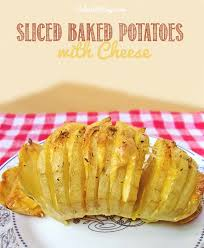

All About Sweet Potatoes
The best vegetable there is
The sweet potatoes is starchy,large root vegetable with a sweet taste. They are known to contain a relative high nutritonal value, most notably the vitamin beta-carotena. Sweet potatoes have versatile uses for cooking.They can be baked steamed,fried,microwaved.They are frequently used in savoury dishes,curries,soups, burgers,dessert, and much more.
Top Producers of Sweet Potatoes
- China
- Uganda
- Nigeria
Fun Fact
- Sweet potatoes are only distantly related to potatoes
- The flesh of sweet potatoes can varies in color to include red,white,pink and purple
- Its is a misconception that orange sweet potatoes are the same as yams